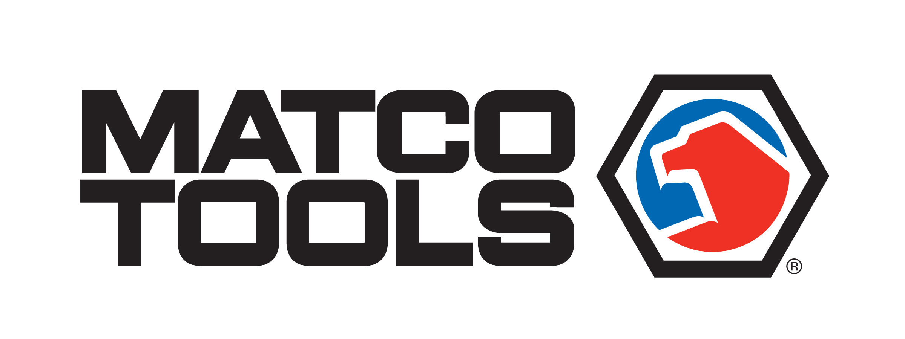

Herramientas Matco Tools
Introducción
Matco Tools es una marca estadounidense reconocida por la fabricación y distribución de herramientas profesionales para la
industria automotriz.
Fundada en 1946 y con sede en Stow, Ohio, Matco ha consolidado su reputación al ofrecer más de 13,000 productos,
incluyendo herramientas manuales, eléctricas, neumáticas, equipos de diagnóstico y soluciones de almacenamiento
Wikipedia.
Esta página detalla su proceso de fabricación, costos, usos, funcionalidad, calidad de materiales y mantenimiento.
Fabricación
Matco Tools mantiene una producción diversificada. Sus cajas de herramientas se fabrican en Jamestown, Nueva York
pluggedinacademy.com. Otras herramientas se producen
en Columbus, Ohio, y en plantas ensambladoras en Ontario y Quebec, Canadá
My WordPress
Website.
Además, algunos componentes se obtienen de países como China, Taiwán y Japón, conocidos por su ingeniería de
precisión. Esta combinación permite a Matco mantener altos estándares de calidad y satisfacer diversas necesidades del
mercado.
Costo
Las herramientas de Matco pertenecen al segmento premium. Por ejemplo, una llave de impacto neumática de 1/2" puede
costar alrededor de $599.95
matcotools.com.
A pesar de su precio elevado, muchos profesionales consideran que la inversión se justifica por la durabilidad y
eficiencia que ofrecen estas herramientas
toolsprofy.com.
Uso y Funcionalidad
Diseñadas para profesionales, las herramientas de Matco son ideales para tareas exigentes en talleres automotrices. Su
gama incluye herramientas manuales, eléctricas, neumáticas y de diagnóstico.
Por ejemplo, el trinquete neumático de 3/8" MT2854 ofrece hasta 100 ft/lbs de torque inverso, facilitando la extracción
de sujetadores difíciles
fleetmaintenance.com.
Estas herramientas están diseñadas para mejorar la eficiencia y precisión en el trabajo diario.
Calidad del Material
Matco utiliza aceros de aleación de alto rendimiento y acero cromo-vanadio en la fabricación de sus herramientas
My WordPress
Website.
Estos materiales proporcionan resistencia al desgaste y durabilidad. Además, las herramientas cuentan con diseños
ergonómicos y tolerancias precisas, lo que mejora el rendimiento y la comodidad durante un uso prolongado.
Mantenimiento
El mantenimiento adecuado es esencial para prolongar la vida útil de las herramientas. Algunos modelos, como el
trinquete neumático MT2854, incluyen engrasadores integrados que facilitan su lubricación
fleetmaintenance.com.
Matco también ofrece garantías competitivas, que incluyen reparación o reemplazo de herramientas defectuosas sin costo
adicional
SlashGear.
Conclusión
Matco Tools representa una opción confiable para profesionales que buscan herramientas de alta calidad y rendimiento. Su
compromiso con la excelencia en fabricación, materiales superiores y soporte postventa la posiciona como una marca
líder en el sector automotriz.
Aunque su costo es elevado, la inversión se traduce en eficiencia, durabilidad y confianza en el trabajo diario.